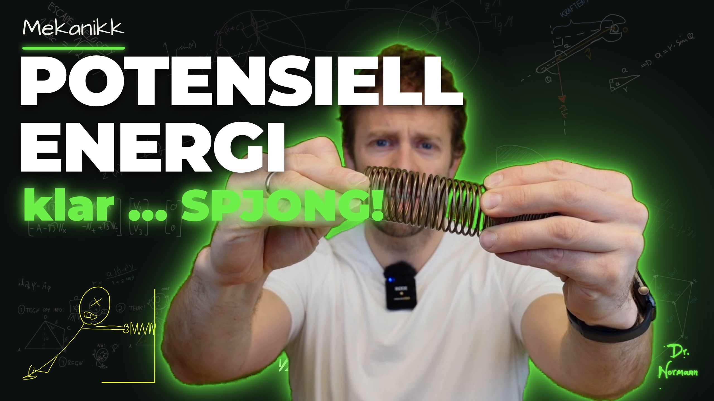

<!DOCTYPE html>
<!-- Animasjon: Potensiell energi. Lages fra denne malen med lag_anim.py (setter inn lærerens tegninger fra elementer/).
     Tider i T = tid i det klippede opptaket (klipp/edl.json). Hovedscenen starter 2.6 s senere i animasjonen (tittelkortet). -->
<html lang="no"><head><meta charset="utf-8">
<style>
@font-face{font-family:Hand;src:url(../../_verktoy/ArchitectsDaughter-Regular.ttf)}
@font-face{font-family:Comic;font-weight:700;src:url(../../_verktoy/ComicNeue-Bold.ttf)}
@font-face{font-family:Mont;font-weight:900;src:url(../../_verktoy/Montserrat-Black.ttf)}
:root{--kritt:#ecefe6;--gronn:#6ef04a;--oransje:#f19c2c;--gul:#eee462;--turkis:#56d7b8;--tavle:#0d1110}
html,body{margin:0;width:1920px;height:1080px;overflow:hidden;background:var(--tavle)}
body{font-family:Hand;color:var(--kritt)}
#bg{position:absolute;inset:0;background:url(../../_verktoy/tavle-bakgrunn.webp) center/cover;opacity:.09}
#drlogo{position:absolute;right:30px;top:30px;height:90px;z-index:20}
.a{position:absolute;opacity:0;white-space:nowrap}
.h1{font:400 84px/1 Hand;color:var(--oransje);letter-spacing:.06em}
.h2{font:400 64px/1 Hand;color:var(--gul);letter-spacing:.05em}
.t{font:400 50px/1.25 Hand}
.tl{font:400 40px/1.3 Hand}
.boks{border-radius:6px;padding:24px 34px;font:400 46px/1.3 Hand;white-space:normal}
.gronnboks{background:rgba(110,240,74,.12);border:2px solid rgba(110,240,74,.35)}
.graaboks{background:rgba(236,239,230,.10);border:2px solid rgba(236,239,230,.25)}
.boks .bt{display:block;font-size:.8em;letter-spacing:.06em;margin-bottom:6px}
.f{font:400 58px/1.2 Hand}
.v{position:relative;display:inline-block}
.v::before{content:'';position:absolute;left:8%;right:10%;top:.02em;border-top:3px solid currentColor}
.v::after{content:'';position:absolute;right:6%;top:-.08em;width:.16em;height:.16em;border:solid currentColor;border-width:3px 3px 0 0;transform:rotate(45deg)}
sub{font-size:.62em}
sup{font-size:.62em}
.tegn{position:absolute;opacity:0;overflow:visible}
.tegn path.s{stroke-dasharray:1 1;stroke-dashoffset:1}
.pop{font:400 96px/1 Hand;color:var(--gul);letter-spacing:.04em}
#viskelaer{position:absolute;top:-60px;height:1200px;width:520px;z-index:15;display:none;
  background:linear-gradient(90deg,rgba(13,17,16,0) 0%,#0d1110 30%,#0d1110 70%,rgba(13,17,16,0) 100%)}
#sone{position:absolute;left:1300px;top:420px;width:620px;height:660px;border:4px dashed #f19c2c;box-sizing:border-box;display:none;z-index:30}
.rec{font:700 40px Comic;color:#ff4d4d}
.panel{position:absolute;border:3px solid rgba(236,239,230,.55);border-radius:14px;background:rgba(236,239,230,.03);overflow:hidden}
svg{overflow:visible}
.brok{display:inline-flex;flex-direction:column;align-items:center;vertical-align:middle;font-size:.8em;line-height:1;margin:0 .14em;position:relative;top:-.1em}.brok>span:first-child{border-bottom:.09em solid currentColor;padding:0 .12em .04em}.brok>span:last-child{padding-top:.04em}
</style></head><body>
<div id="bg"></div>

<div id="lag"></div>
<div id="viskelaer"></div>
<div id="sone"></div>
<!--SVG-->
<script>
// ---------- hjelpere ----------
const L = document.getElementById('lag');
const E = [];   // alle elementer: {el, inn, ut, type, ...}
const lerp = (a, b, x) => a + (b - a) * x, klemt = x => Math.max(0, Math.min(1, x));
const glatt = x => { x = klemt(x); return x * x * (3 - 2 * x); };
function lag(html, x, y, inn, ut, type = 'fade', ekstra = {}) {
  const d = document.createElement('div'); d.className = 'a ' + (ekstra.cls || ''); d.innerHTML = html;
  d.style.left = x + 'px'; d.style.top = y + 'px'; if (ekstra.w) { d.style.width = ekstra.w + 'px'; d.style.whiteSpace = 'normal'; }
  if (ekstra.css) d.style.cssText += ekstra.css;
  L.appendChild(d); const o = Object.assign({ el: d, inn, ut, type, varighet: 0.6 }, ekstra); E.push(o); return o;
}
// Tekst som «skrives»: avsløres fra venstre i løpet av varighet sekunder
const skriv = (html, x, y, inn, ut, cls, varighet, ekstra = {}) => lag(html, x, y, inn, ut, 'skriv', Object.assign({ cls, varighet: varighet || 1.2 }, ekstra));
// Lærerens tegning (SVG) – strekene tegnes fram i rekkefølge, gruppert etter et filter
function tegning(id, x, y, bredde, inn, ut, grupper) {
  const mal = document.getElementById('svg-' + id); const s = mal.content.firstElementChild.cloneNode(true);
  const vb = s.getAttribute('viewBox').split(' ').map(Number); s.setAttribute('class', 'tegn');
  s.style.left = x + 'px'; s.style.top = y + 'px'; s.style.width = bredde + 'px'; s.style.height = (bredde * vb[3] / vb[2]) + 'px';
  s.querySelectorAll('path.s').forEach(p => { const w = parseFloat(p.getAttribute('stroke-width') || 1); p.setAttribute('stroke-width', Math.max(w * 1.35, 1.7)); });
  L.appendChild(s);
  const stier = [...s.querySelectorAll('path')];
  const o = { el: s, inn, ut, type: 'tegning', grupper: (grupper || [{ fra: inn, til: inn + 2, velg: () => true }]).map(g => ({ ...g, stier: stier.filter(p => g.velg(+p.dataset.x, +p.dataset.y, p)) })) };
  E.push(o); return o;
}
function sti(d, farge, bredde, inn, varighet, ut, ekstra = {}) {   // egen strek (chalk), tegnes fram
  const ns = 'http://www.w3.org/2000/svg', s = document.createElementNS(ns, 'svg');
  s.setAttribute('width', 1920); s.setAttribute('height', 1080); s.style.cssText = 'position:absolute;left:0;top:0;opacity:0;pointer-events:none';
  const p = document.createElementNS(ns, 'path'); p.setAttribute('d', d); p.setAttribute('pathLength', 1);
  p.setAttribute('stroke', farge); p.setAttribute('stroke-width', bredde); p.setAttribute('fill', ekstra.fyll || 'none');
  p.setAttribute('stroke-linecap', 'round'); p.setAttribute('stroke-linejoin', 'round'); p.style.strokeDasharray = '1 1';
  if (ekstra.strek) p.setAttribute('stroke-dasharray', ekstra.strek);
  s.appendChild(p); L.appendChild(s);
  const o = { el: s, p, inn, ut, type: 'sti', varighet, ...ekstra }; E.push(o); return o;
}
const pil = (x1, y1, x2, y2, farge, b, inn, v, ut) => {   // pil som strek med pilhode
  const a = Math.atan2(y2 - y1, x2 - x1), k = 22;
  const d = `M${x1} ${y1} L${x2} ${y2} M${x2 - k * Math.cos(a - .45)} ${y2 - k * Math.sin(a - .45)} L${x2} ${y2} L${x2 - k * Math.cos(a + .45)} ${y2 - k * Math.sin(a + .45)}`;
  return sti(d, farge, b, inn, v, ut);
};

// ---------- tidslinje ----------
// Tidene under er skrevet i T = tid i FØRSTE klipp (klipp/edl.json). Utkast 2 har kuttet bort noen biter;
// KLIPP oversetter gammel T til ny T: [gammel T0, gammel T1, ny T0] per bit (klipp/edl2.json).
const KLIPP = [[0, 9.44, 0.0], [12.433, 14.499, 9.44], [14.499, 19.15, 11.52], [20.55, 29.342, 16.16], [29.342, 37.708, 24.96], [37.708, 40.174, 33.32], [40.174, 43.486, 35.8], [43.486, 51.219, 39.12], [51.219, 53.952, 46.84], [53.952, 58.562, 49.56], [58.562, 60.528, 54.16], [60.528, 73.728, 56.12], [73.728, 83.728, 69.32], [83.728, 92.094, 79.32], [92.094, 98.634, 87.68], [98.634, 106.644, 94.24], [106.924, 108.71, 102.24], [108.71, 114.21, 104.04], [114.21, 118.043, 109.92], [118.043, 123.476, 113.76], [123.476, 133.242, 119.2], [133.242, 145.075, 128.96], [145.075, 146.515, 140.8], [146.515, 148.515, 142.24], [148.515, 149.915, 144.24], [149.915, 157.435, 145.64], [160.8, 160.981, 153.16], [160.981, 162.981, 153.36], [162.981, 162.981, 155.36], [163.301, 174.081, 156.12], [174.081, 184.481, 166.88], [184.481, 191.047, 177.28], [191.047, 196.813, 183.84], [196.813, 199.055, 189.6], [199.055, 203.055, 191.84], [203.055, 212.788, 195.84], [212.788, 216.6, 205.56], [219.5, 221.85, 209.36], [226.5, 229.387, 211.72], [229.387, 234.787, 214.6], [234.787, 241.253, 220.0], [241.253, 242.319, 226.48]];
const R = T => { for (const [a, b, n] of KLIPP) { if (T < a) return n; if (T <= b) return n + (T - a); } const s = KLIPP[KLIPP.length - 1]; return s[2] + (s[1] - s[0]); };
const KALD = 11.5, TITTEL = 1.6, HOVED = 216.49, DASH = 5.5;
const M = T => R(T) + TITTEL;            // tid i (gammelt) opptak → tid i animasjonen
const SLUTT = KALD + TITTEL + HOVED + DASH;
window.S = [['kald', KALD], ['tittel', TITTEL], ['hoved', HOVED], ['dashman', DASH]];
const START = [0, KALD, KALD + TITTEL, KALD + TITTEL + HOVED];
const SEKSJON = [M(60.53), M(98.63), M(149.92), M(203.06)];   // viskelær-overganger

// --- Kald start: bak kulissene ---
lag('<span class="rec">● REC</span>', 90, 70, 0.2, KALD, 'blink');
skriv('bak kulissene …', 90, 140, 0.8, KALD, 't', 1.4, { css: 'color:#9aa49e;font-size:46px' });
// (kuttet) skriv('«wireless GoPro og greier»', 90, 900, M(9.6) - TITTEL, KALD, 'tl', 1.2, { css: 'color:#eee462;transform:rotate(-3deg)' });

// --- Tittelkort: miniatyrbildet (som i Arbeid-videoen) ---
lag('', 0, 0, KALD, KALD + TITTEL, 'tittelkort');

// --- A: Hva er potensiell energi? (T 14.5–60.5) ---
const A0 = M(14.5), A1 = SEKSJON[0];
skriv('POTENSIELL ENERGI', 90, 60, A0 + 0.1, A1, 'h1', 1.2);
sti('M90 160 C350 152 600 165 860 156', '#f19c2c', 5, A0 + 1.1, 0.6, A1);
skriv('Arbeid er overføring av energi', 90, 205, M(15.3), A1, 't', 2.4);
// koppen løftes (T 19.3–29.3)
lag(`<svg width="200" height="190" viewBox="0 0 200 190"><path d="M40 30 L52 170 Q100 182 148 170 L160 30 Z" fill="none" stroke="#ecefe6" stroke-width="6" stroke-linejoin="round"/>
  <path d="M160 62 C205 62 205 132 154 132" fill="none" stroke="#ecefe6" stroke-width="6"/><path d="M70 75 q12 -10 24 0 q12 10 24 0" fill="none" stroke="#56d7b8" stroke-width="5"/></svg>`,
  880, 700, M(19.6), M(40.0), 'kopp', { fra: M(20.4), til: M(23.4), y0: 700, y1: 330 });
pil(830, 890, 830, 560, '#f19c2c', 7, M(21.0), 1.6, M(40.0));
skriv('arbeid', 600, 690, M(22.6), M(40.0), 't', 0.8, { css: 'color:#f19c2c' });
skriv('Energien er ikke borte …', 90, 330, M(33.0), M(40.0), 't', 1.6);
skriv('… den ligger lagret og venter', 90, 410, M(37.8), M(40.0), 't', 1.6, { css: 'color:#56d7b8' });
// definisjonsboks
lag('', 70, 300, M(40.3), A1, 'boks', { cls: 'boks gronnboks', w: 1160, css: 'height:330px' });
skriv('POTENSIELL ENERGI', 104, 322, M(40.6), A1, 'tl', 1.2, { css: 'color:#6ef04a;letter-spacing:.08em' });
skriv('er energi som ligger lagret i et system,', 104, 395, M(45.4), A1, 't', 2.0);
skriv('og som potensielt kan utløses.', 104, 470, M(48.4), A1, 't', 2.0);
lag('<span class="pop" style="font-size:74px">good catch!</span>', 940, 150, M(51.6), M(54.4), 'stempel', { rot: -8 });
skriv('slipper → lagret energi blir til <span style="color:#6ef04a">bevegelsesenergi</span>', 90, 680, M(54.6), A1, 'tl', 2.4);
skriv('To eksempler:', 90, 790, M(58.8), A1, 't', 0.8, { css: 'color:#eee462' });
skriv('1. spiralfjær &nbsp;&nbsp; 2. tyngdefeltet', 420, 790, M(59.5), A1, 't', 1.0);

// --- B: Eks 1, spiralfjær (T 60.5–98.6) – tegnet på nytt (fjær som presses/strekkes i takt med læreren) ---
const B0 = SEKSJON[0], B1 = SEKSJON[1];
skriv('EKS 1: ENERGI I SPIRALFJÆR', 90, 60, B0 + 0.2, B1, 'h2', 1.3);
sti('M90 145 q20 -10 40 0 t40 0 t40 0 t40 0 t40 0 t40 0 t40 0 t40 0 t40 0 t40 0 t40 0 t40 0 t40 0 t40 0 t40 0 t40 0 t40 0 t40 0 t40 0 t40 0 t40 0', '#eee462', 4, B0 + 1.2, 0.8, B1);
// vegg og likevektslinje
sti('M150 225 L150 455 M150 245 L122 270 M150 285 L122 310 M150 325 L122 350 M150 365 L122 390 M150 405 L122 430', '#ecefe6', 5, M(61.0), 0.8, B1);
const LV = 720;   // fri ende i likevekt (px)
sti(`M${LV} 210 L${LV} 470`, '#9aa49e', 3, M(61.4), 0.6, B1, { strek: '12 12' });
skriv('likevekt', LV - 70, 480, M(61.8), B1, 'tl', 0.8, { css: 'color:#9aa49e;font-size:36px' });
skriv('x = 0', LV - 48, 528, M(62.2), B1, 'tl', 0.6, { css: 'color:#9aa49e;font-size:36px' });
// fjærens frie ende E(G) i takt med det læreren gjør
const SV = (G, t0, A, f = 3.2, d = 0.42) => { const t = G - t0; return t < 0 ? A : A * Math.cos(2 * Math.PI * f * t) * Math.exp(-t / d); };
function fjaerEnde(G) {
  let u = 0;   // utslag fra likevekt (px), negativ = presset sammen
  if (G < M(63.5)) u = 0;
  else if (G < M(71.95)) u = -250 * glatt((G - M(63.5)) / (M(69.0) - M(63.5)));
  else if (G < M(74.5)) u = SV(G, M(71.95), -250);                                   // SPJONG
  else if (G < M(80.45)) u = 250 * glatt((G - M(74.5)) / (M(78.0) - M(74.5)));        // drar den utover
  else if (G < M(85.0)) u = SV(G, M(80.45), 250, 2.6, 0.38);
  else if (G < M(91.4)) u = -190 * glatt((G - M(85.0)) / (M(87.5) - M(85.0)));        // presser igjen (Hookes lov)
  else u = -190 * (1 - glatt((G - M(91.4)) / 1.0));
  return u;
}
const ns = 'http://www.w3.org/2000/svg';
function egen(inn, ut, tegn) { const s = document.createElementNS(ns, 'svg'); s.setAttribute('width', 1920); s.setAttribute('height', 1080);
  s.style.cssText = 'position:absolute;left:0;top:0;opacity:0;pointer-events:none'; L.appendChild(s); const o = { el: s, inn, ut, type: 'egen', tegn }; E.push(o); return o; }
egen(M(61.2), B1, (s, G) => {
  const u = fjaerEnde(G), E = LV + u, y = 340, x0 = 150, n = 13, a0 = x0 + 30, a1 = E - 34, k = klemt((G - M(61.2)) / 1.4);
  let d = `M${x0} ${y} L${a0} ${y}`;
  for (let i = 0; i < n; i++) { const xa = a0 + (a1 - a0) * (i + 0.25) / n, xb = a0 + (a1 - a0) * (i + 0.75) / n; d += ` L${xa} ${y - 46} L${xb} ${y + 46}`; }
  d += ` L${a1} ${y} L${E} ${y}`;
  let h = `<path d="${d}" fill="none" stroke="#eee462" stroke-width="6" stroke-linejoin="round" stroke-linecap="round" pathLength="1" stroke-dasharray="1 1" stroke-dashoffset="${1 - k}"/>`;
  h += `<rect x="${E - 8}" y="${y - 62}" width="18" height="124" rx="6" fill="#ecefe6" opacity="${k}"/>`;
  // forskyvningen x (oransje) og fjærkraften F (grønn), lengde ∝ x
  if (Math.abs(u) > 12) {
    const yx = 455; h += `<path d="M${LV} ${yx} L${E} ${yx} M${E - 18 * Math.sign(u)} ${yx - 12} L${E} ${yx} L${E - 18 * Math.sign(u)} ${yx + 12}" stroke="#f19c2c" stroke-width="5" fill="none" stroke-linecap="round"/>`;
    h += `<text x="${(LV + E) / 2 - 12}" y="${yx - 14}" font-family="Hand" font-size="44" fill="#f19c2c">x</text><path d="M${(LV + E) / 2 - 12} ${yx - 52} l24 0 m-8 -6 l8 6 l-8 6" stroke="#f19c2c" stroke-width="3" fill="none" stroke-linecap="round"/>`;
    const L2 = -1.05 * u, yf = 240, xs = E + (u < 0 ? 12 : -12), xe = xs + L2, sg = Math.sign(L2);
    h += `<path d="M${xs} ${yf} L${xe} ${yf} M${xe - 22 * sg} ${yf - 15} L${xe} ${yf} L${xe - 22 * sg} ${yf + 15}" stroke="#6ef04a" stroke-width="7" fill="none" stroke-linecap="round" stroke-linejoin="round"/>`;
    h += `<text x="${xe + (sg > 0 ? 10 : -50)}" y="${yf + 14}" font-family="Hand" font-size="46" fill="#6ef04a">F</text>`;
    h += `<path d="M${xe + (sg > 0 ? 12 : -48)} ${yf - 26} l26 0 m-8 -7 l8 7 l-8 7" stroke="#6ef04a" stroke-width="3" fill="none"/>`;
  }
  s.innerHTML = h;
});
// SPJONG med en bølge utover hele tavla
lag('<span class="pop">SPJONG!</span>', 880, 560, M(72.0), M(74.4), 'stempel', { rot: 6 });
egen(M(71.95), M(74.0), (s, G) => {
  let h = ''; for (let i = 0; i < 4; i++) { const t = G - M(71.95) - i * 0.14; if (t < 0) continue; const r = 2600 * Math.pow(t / 1.6, 0.8), op = klemt(1 - t / 1.6);
    h += `<circle cx="470" cy="340" r="${r}" fill="none" stroke="${i % 2 ? '#56d7b8' : '#eee462'}" stroke-width="${10 - i * 2}" opacity="${op * 0.8}"/>`; }
  s.innerHTML = h;
});
const SKAKER = [[M(71.95), 0.7, 14], [M(144.2), 0.6, 12]];   // [start, varighet, px]
// Hookes lov
lag('', 110, 640, M(81.0), B1, 'boks', { cls: 'boks graaboks', w: 520, css: 'height:250px' });
skriv('HOOKES LOV', 140, 660, M(81.3), B1, 'tl', 0.9, { css: 'letter-spacing:.08em' });
skriv('<span class="v">F</span> = <span id="minus" style="position:relative;display:inline-block">−<svg id="ring" width="90" height="90" viewBox="0 0 90 90" style="position:absolute;left:50%;top:50%;margin:-45px 0 0 -45px;overflow:visible"><path d="M45 8 C78 6 86 40 80 58 C72 84 20 88 9 60 C0 34 18 10 50 6" fill="none" stroke="#eee462" stroke-width="5" stroke-linecap="round" pathLength="1" stroke-dasharray="1 1" stroke-dashoffset="1"/></svg></span> k<span class="v">x</span>', 160, 720, M(83.9), B1, 'f', 1.4, { ring: M(92.3), css: 'font-size:72px' });
skriv('k = fjærkonstanten', 140, 830, M(89.2), B1, 'tl', 1.2, { css: 'color:#56d7b8' });
skriv('minus: fjærkrafta virker alltid', 110, 958, M(93.0), B1, 'tl', 1.4, { css: 'color:#eee462' });
skriv('tilbake mot likevekt', 110, 1008, M(94.2), B1, 'tl', 1.2, { css: 'color:#eee462' });

// --- C: Arbeidet er arealet (T 98.6–149.9) – grafen tegnet på nytt ---
const C0 = SEKSJON[1], C1 = SEKSJON[2];
skriv('EKS 1: ENERGI I SPIRALFJÆR', 90, 60, C0, C1, 'h2', 0.01);
sti('M90 145 q20 -10 40 0 t40 0 t40 0 t40 0 t40 0 t40 0 t40 0 t40 0 t40 0 t40 0 t40 0 t40 0 t40 0 t40 0 t40 0 t40 0 t40 0 t40 0 t40 0 t40 0 t40 0', '#eee462', 4, C0, 0.01, C1);
const OX = 170, OY = 900, X3 = 610;   // origo og x3 (px); linja F = kx har stigning 1 i px
// skravert trekant – nøyaktig under grafen (tegnes først så linja ligger over)
lag(`<svg width="${X3 - OX}" height="${X3 - OX}"><polygon points="0,${X3 - OX} ${X3 - OX},${X3 - OX} ${X3 - OX},0" fill="rgba(236,239,230,.30)"/></svg>`, OX, OY - (X3 - OX), M(109.2), C1, 'wipe', { varighet: 1.6 });
pil(OX, OY + 12, OX, 240, '#ecefe6', 4, M(99.4), 0.7, C1);
pil(OX - 12, OY, 790, OY, '#ecefe6', 4, M(99.8), 0.7, C1);
skriv('F', OX - 50, 222, M(100.0), C1, 't', 0.3);
skriv('x', 800, OY - 34, M(100.4), C1, 't', 0.3);
sti(`M${OX} ${OY} L700 ${OY - 530}`, '#6ef04a', 6, M(103.6), 1.4, C1);
skriv('F = kx', 600, 300, M(104.6), C1, 't', 0.8, { css: 'color:#6ef04a' });
[[300, 1], [455, 2], [X3, 3]].forEach(([x, i], j) => {
  const y = OY - (x - OX), t = M(106.7) + j * 0.5;
  sti(`M${x} ${OY} L${x} ${y} M${OX} ${y} L${x} ${y}`, '#56d7b8', 3, t, 0.4, C1, { strek: '10 10' });
  lag(`<svg width="22" height="22"><circle cx="11" cy="11" r="9" fill="#56d7b8"/></svg>`, x - 11, y - 11, t + 0.3, C1, 'fade');
  skriv(`x<sub>${i}</sub>`, x - 14, OY + 10, t + 0.3, C1, 'tl', 0.3, { css: 'color:#56d7b8' });
  skriv(`F<sub>${i}</sub>`, OX - 62, y - 26, t + 0.3, C1, 'tl', 0.3, { css: 'color:#56d7b8' });
});
skriv('arbeid brukt på å', 830, 230, M(109.6), C1, 't', 1.0);
skriv('presse sammen fjæra', 830, 292, M(110.6), C1, 't', 1.2);
skriv('= arealet under grafen', 830, 354, M(112.0), C1, 't', 1.0, { css: 'color:#9aa49e' });
pil(820, 400, 520, 760, '#ecefe6', 4, M(110.2), 0.8, C1);
// arealet av en trekant: A = ½ · g · h
skriv('Areal av trekant:', 830, 450, M(122.3), C1, 't', 1.0, { css: 'color:#56d7b8' });
sti('M1165 565 L1265 565 L1265 490 Z', '#56d7b8', 4, M(122.6), 0.7, C1);
skriv('g', 1203, 566, M(123.0), C1, 'tl', 0.3, { css: 'color:#f19c2c' });
skriv('h', 1273, 500, M(123.0), C1, 'tl', 0.3, { css: 'color:#f19c2c' });
skriv('A = <span class="brok"><span>1</span><span>2</span></span> · g · h', 830, 515, M(123.2), C1, 'f', 1.0, { css: 'font-size:52px' });
sti(`M${OX} ${OY + 62} L${OX} ${OY + 74} L${X3} ${OY + 74} L${X3} ${OY + 62}`, '#f19c2c', 4, M(123.6), 0.6, C1);
skriv('g = x', (OX + X3) / 2 - 50, OY + 78, M(123.8), C1, 'tl', 0.5, { css: 'color:#f19c2c' });
skriv('h = kx', X3 + 18, OY - 250, M(124.2), C1, 'tl', 0.5, { css: 'color:#f19c2c' });
skriv('= <span class="brok"><span>1</span><span>2</span></span> · x · kx', 880, 585, M(124.6), C1, 'f', 1.0, { css: 'font-size:52px' });
// integralet
skriv('W = ∫ <span class="v">F</span> · d<span class="v">x</span> = ∫ kx dx', 830, 670, M(126.3), C1, 'f', 2.0, { css: 'font-size:50px' });
skriv('= <span class="brok"><span>1</span><span>2</span></span> kx² + W<sub>0</sub>', 880, 742, M(129.2), C1, 'f', 1.6, { css: 'font-size:50px' });
skriv('W<sub>0</sub> = 0', 1000, 800, M(131.8), C1, 'tl', 0.8, { css: 'color:#eee462' });
skriv('arbeidet forsvinner ikke – det ligger lagret i fjæra', 90, 1032, M(134.4), C1, 'tl', 2.4, { css: 'font-size:30px' });
lag('', 820, 855, M(139.6), C1, 'boks', { cls: 'boks gronnboks', w: 400, css: 'height:120px' });
skriv('POTENSIELL ENERGI I SPIRALFJÆR', 840, 867, M(139.8), C1, 'tl', 1.2, { css: 'color:#6ef04a;font-size:24px;letter-spacing:.05em' });
skriv('E<sub>p</sub> = <span class="brok"><span>1</span><span>2</span></span> kx²', 890, 911, M(140.6), C1, 'f', 1.0, { css: 'font-size:62px' });
lag('<span class="pop">SPJONG!</span>', 230, 640, M(144.2), M(146.4), 'stempel', { rot: -6 });
skriv('→ bevegelsesenergi', 840, 1030, M(146.8), C1, 'tl', 1.4, { css: 'color:#6ef04a;font-size:34px' });

// --- D: Eks 2, tyngdefeltet (T 149.9–203) ---
const D0 = SEKSJON[2], D1 = SEKSJON[3];
skriv('EKS 2: ENERGI I TYNGDEFELTET', 90, 60, D0 + 0.2, D1, 'h2', 1.3);
sti('M90 145 q20 -10 40 0 t40 0 t40 0 t40 0 t40 0 t40 0 t40 0 t40 0 t40 0 t40 0 t40 0 t40 0 t40 0 t40 0 t40 0 t40 0 t40 0 t40 0 t40 0 t40 0 t40 0 t40 0', '#eee462', 4, D0 + 1.2, 0.8, D1);
// boka løftes fra bakken til høyden h (x 900–1240)
sti('M760 900 L1100 900', '#ecefe6', 4, M(152.0), 0.8, D1);
lag('<svg width="120" height="120"><rect x="8" y="34" width="104" height="58" rx="5" fill="none" stroke="#ecefe6" stroke-width="5"/><path d="M8 48 L112 48 M22 34 L22 92" stroke="#ecefe6" stroke-width="3" fill="none"/><path d="M34 64 L96 64 M34 76 L84 76" stroke="#9aa49e" stroke-width="3" fill="none"/></svg>', 820, 790, M(152.4), D1, 'ball', { fra: M(154.2), til: M(157.4), y0: 790, y1: 330 });
lag('<svg width="120" height="120"><rect x="8" y="34" width="104" height="58" rx="5" fill="none" stroke="#9aa49e" stroke-width="3" stroke-dasharray="8 9"/></svg>', 820, 790, M(161.0), D1, 'fade');
pil(880, 470, 880, 600, '#6ef04a', 7, M(166.4), 0.8, D1);   // G ned
skriv('<span class="v">G</span>', 896, 560, M(166.8), D1, 't', 0.4, { css: 'color:#6ef04a' });
pil(880, 320, 880, 200, '#6ef04a', 7, M(163.2), 0.8, D1);   // F opp
skriv('<span class="v">F</span>', 896, 196, M(163.6), D1, 't', 0.4, { css: 'color:#6ef04a' });
pil(1020, 898, 1020, 392, '#f19c2c', 7, M(185.6), 1.0, D1);   // h
skriv('<span class="v">h</span>', 1038, 600, M(186.3), D1, 't', 0.4, { css: 'color:#f19c2c' });
skriv('konstant fart ⇒ F = G', 90, 180, M(160.0), D1, 't', 1.8, { css: 'color:#56d7b8' });
lag('', 80, 240, M(169.2), D1, 'boks', { cls: 'boks graaboks', w: 400, css: 'height:150px' });
skriv('TYNGDEKRAFT', 108, 252, M(169.4), D1, 'tl', 0.8, { css: 'letter-spacing:.08em' });
skriv('<span class="v">G</span> = m<span class="v" style="font-family:Comic">g</span>', 130, 306, M(170.0), D1, 'f', 1.0);
// graf med konstant kraft
sti('M120 860 L120 480 M108 500 L120 480 L132 500 M120 860 L680 860 M660 848 L680 860 L660 872', '#eee462', 4, M(174.4), 1.2, D1);
skriv('F', 140, 450, M(174.6), D1, 't', 0.3, { css: 'color:#eee462' });
skriv('x', 690, 840, M(175.0), D1, 't', 0.3, { css: 'color:#eee462' });
sti('M120 560 L560 560', '#6ef04a', 5, M(178.4), 0.9, D1);
sti('M560 560 L560 860', '#56d7b8', 3, M(179.0), 0.5, D1, { strek: '0.02 0.02' });
lag('<div style="width:440px;height:300px;background:rgba(236,239,230,.32)"></div>', 120, 560, M(179.4), D1, 'wipe', { varighet: 1.4 });
skriv('mg', 60, 535, M(180.2), D1, 'tl', 0.4, { css: 'color:#6ef04a' });
skriv('h', 548, 870, M(186.4), D1, 'tl', 0.4, { css: 'color:#f19c2c' });
skriv('W = ∫ <span class="v">F</span> · d<span class="v">x</span> = F · h', 120, 920, M(177.2), D1, 'f', 1.8, { css: 'font-size:50px' });
skriv('= mg · h', 600, 920, M(183.0), D1, 'f', 1.2, { css: 'font-size:50px' });
lag('', 760, 950, M(194.8), D1, 'boks', { cls: 'boks gronnboks', w: 360, css: 'height:100px;padding:6px 24px' });
skriv('E<sub>p</sub> = mgh', 800, 956, M(195.2), D1, 'f', 1.0, { css: 'font-size:62px' });

// --- E: Oppsummering (T 203–242.3) ---
const E0 = SEKSJON[3], E1 = START[3];
skriv('FELLES FOR BEGGE', 90, 60, E0 + 0.2, E1, 'h1', 1.2, { css: 'font-size:72px' });
lag('', 90, 200, M(201.5), E1, 'boks', { cls: 'boks gronnboks', w: 520, css: 'height:170px' });
skriv('SPIRALFJÆR', 120, 214, M(201.7), E1, 'tl', 0.7, { css: 'color:#6ef04a' });
skriv('E<sub>p</sub> = <span class="brok"><span>1</span><span>2</span></span> kx²', 130, 270, M(202.0), E1, 'f', 0.8);
lag('', 690, 200, M(202.4), E1, 'boks', { cls: 'boks gronnboks', w: 520, css: 'height:170px' });
skriv('TYNGDEFELTET', 720, 214, M(202.6), E1, 'tl', 0.7, { css: 'color:#6ef04a' });
skriv('E<sub>p</sub> = mgh', 730, 270, M(202.9), E1, 'f', 0.8);
skriv('arbeid mot en kraft', 90, 460, M(203.3), E1, 't', 1.6);
pil(560, 492, 700, 492, '#f19c2c', 5, M(206.4), 0.5, E1);
skriv('lagret som <span style="color:#f19c2c">potensiell energi</span>', 730, 460, M(206.6), E1, 't', 2.0, { w: 560 });
skriv('… som kan hentes ut igjen', 90, 560, M(212.4), E1, 't', 1.8, { css: 'color:#56d7b8' });
skriv('potensiell energi', 90, 740, M(229.6), E1, 't', 1.2, { css: 'color:#f19c2c' });
pil(480, 772, 620, 772, '#ecefe6', 5, M(230.6), 0.5, E1);
skriv('bevegelsesenergi', 650, 740, M(230.8), E1, 't', 1.4, { css: 'color:#6ef04a' });
skriv('= kinetisk energi', 650, 815, M(238.2), E1, 'tl', 1.2, { css: 'color:#eee462' });
lag('', 90, 960, M(240.6), E1, 'fade');
skriv('Takk for meg!', 520, 950, M(241.2), E1, 't', 0.8, { css: 'color:#ecefe6' });

// --- Dashman-tegneserie ---
const D = START[3];
lag('', 90, 200, D, SLUTT, 'panel', { cls: 'panel', css: 'width:520px;height:620px' });
lag('', 700, 200, D + 1.0, SLUTT, 'panel', { cls: 'panel', css: 'width:520px;height:620px' });
lag('', 1310, 200, D + 2.1, SLUTT, 'panel', { cls: 'panel', css: 'width:520px;height:620px' });
tegning('dash1', 190, 260, 300, D + 0.15, SLUTT, [{ fra: D + 0.15, til: D + 0.9, velg: () => true }]);
lag('<span class="pop" style="font-size:80px">?</span>', 470, 260, D + 0.7, SLUTT, 'stempel', { rot: 10 });
tegning('dash2', 740, 300, 440, D + 1.15, SLUTT, [{ fra: D + 1.15, til: D + 1.9, velg: () => true }]);
skriv('nnnggh …', 760, 720, D + 1.6, SLUTT, 't', 0.6, { css: 'color:#eee462' });
tegning('dash3', 1340, 330, 460, D + 2.25, SLUTT, [{ fra: D + 2.25, til: D + 2.7, velg: () => true }]);
lag('<span class="pop" style="font-size:110px">SPJONG!</span>', 1370, 230, D + 2.75, SLUTT, 'stempel', { rot: -8 });
lag('', 0, 0, D + 2.8, SLUTT, 'flyr', {});

// ---------- tegning av et bilde ----------
const sone = document.getElementById('sone');
const OVERGANG = SEKSJON.concat([START[3]]);
function viskX(G) {   // viskelærets midtpunkt (px) hvis en overgang pågår, ellers null
  for (const s of OVERGANG) { const k = (G - (s - 0.45)) / 0.9; if (k >= 0 && k <= 1) return { x: lerp(-300, 2220, k), s }; }
  return null;
}
window.render = function (n, t) {
  const G = START[n] + t, V = viskX(G);
  for (const o of E) {
    // innhold fra seksjonen som slutter, viskes bort av viskelæret (vises til venstre for det, fram til det er passert)
    const slutterHer = V && Math.abs(o.ut - V.s) < 0.02;
    const synlig = G >= o.inn && (G < o.ut || (slutterHer && G < o.ut + 0.45));
    const venstre = parseFloat(o.el.style.left) || 0;
    const kutt = slutterHer ? Math.max(0, V.x - 160 - venstre) : 0;   // px skjult fra venstre
    let hoyre = 0;
    if (o.type === 'tegning') {
      o.el.style.opacity = synlig ? 1 : 0;
      if (!synlig) continue;
      for (const g of o.grupper) {
        const n2 = g.stier.length;
        g.stier.forEach((p, i) => {
          const a = g.fra + (g.til - g.fra) * i / n2, b = g.fra + (g.til - g.fra) * (i + 1) / n2;
          const x = klemt((G - a) / Math.max(b - a, 1e-3));
          if (p.classList.contains('s')) p.style.strokeDashoffset = 1 - x; else p.style.opacity = x;
        });
      }
      if (o.inn >= START[3] + 2) {   // Dashman flyr ut av bildet
        const fx = klemt((G - (START[3] + 2.85)) / 0.9);
        if (!o.fly) { const ns = 'http://www.w3.org/2000/svg'; o.fly = document.createElementNS(ns, 'g'); o.el.appendChild(o.fly);
          [...o.el.querySelectorAll('path')].filter(p => +p.dataset.x < 450).forEach(p => o.fly.appendChild(p)); }
        o.fly.setAttribute('transform', `translate(${-fx * 160} ${-fx * 200}) rotate(${-fx * 360} 395 255)`); o.el.style.overflow = 'hidden';
      }
      o.el.style.clipPath = kutt ? `inset(-50% -50% -50% ${kutt}px)` : '';
      continue;
    }
    if (o.type === 'egen') {
      o.el.style.opacity = synlig ? 1 : 0; if (synlig) o.tegn(o.el, G);
      o.el.style.clipPath = kutt ? `inset(0 0 0 ${kutt}px)` : '';
      continue;
    }
    if (o.type === 'sti') {
      o.el.style.opacity = synlig ? 1 : 0;
      o.p.style.strokeDashoffset = 1 - klemt((G - o.inn) / o.varighet);
      if (o.strek) { o.p.style.strokeDasharray = ''; o.el.style.opacity = synlig ? klemt((G - o.inn) / o.varighet) : 0; }
      o.el.style.clipPath = kutt ? `inset(0 0 0 ${kutt}px)` : '';
      continue;
    }
    const el = o.el; el.style.opacity = synlig ? 1 : 0; if (!synlig) continue;
    const x = (G - o.inn) / o.varighet;
    el.style.transform = '';
    if (o.type === 'skriv' || o.type === 'wipe') hoyre = 100 - 100 * glatt(x);
    else if (o.type === 'tittelkort') { const k = glatt((G - o.inn) / 0.25); el.style.opacity = k; el.style.transform = `scale(${1.04 - 0.04 * glatt((G - o.inn) / o.varighet / 2.5)})`; }
    else if (o.type === 'fade' || o.type === 'panel') el.style.opacity = glatt((G - o.inn) / 0.4);
    else if (o.type === 'boks') { el.style.opacity = glatt((G - o.inn) / 0.35); el.style.transform = `scale(${lerp(0.94, 1, glatt((G - o.inn) / 0.35))})`; }
    else if (o.type === 'blink') el.style.opacity = Math.floor(G * 1.6) % 2 ? 0.25 : 1;
    else if (o.type === 'stempel') { const k = klemt((G - o.inn) / 0.22); const sk = k < 1 ? lerp(2.2, 1, glatt(k)) : 1 + 0.03 * Math.sin((G - o.inn) * 9); el.style.transform = `rotate(${o.rot || 0}deg) scale(${sk})`; el.style.opacity = Math.min(k * 2, 1, klemt((o.ut - G) / 0.25)); }
    else if (o.type === 'kopp' || o.type === 'ball') { const k = glatt((G - o.fra) / (o.til - o.fra)); el.style.top = lerp(o.y0, o.y1, k) + 'px'; el.style.opacity = glatt((G - o.inn) / 0.4); }
    if (o.ring) { const rp = el.querySelector('#ring path'); if (rp) rp.setAttribute('stroke-dashoffset', 1 - klemt((G - o.ring) / 0.7)); }
    el.style.clipPath = (hoyre || kutt) ? `inset(-30% ${hoyre}% -30% ${kutt ? kutt + 'px' : '-2%'})` : '';
  }
  let sk = 0; for (const [t0, v, a] of SKAKER) { const t = G - t0; if (t >= 0 && t < v) sk = a * (1 - t / v); }
  L.style.transform = sk ? `translate(${sk * Math.sin(G * 83)}px, ${sk * Math.cos(G * 71)}px)` : '';
  const vk = document.getElementById('viskelaer');
  if (V) { vk.style.display = 'block'; vk.style.left = (V.x - 260) + 'px'; vk.style.transform = 'skewX(-12deg)'; } else vk.style.display = 'none';
  sone.style.display = window.VIS_SONE ? 'block' : 'none';
};
window.VIS_SONE = false;
document.getElementById('sone').style.display = 'none';
</script>
</body></html>
